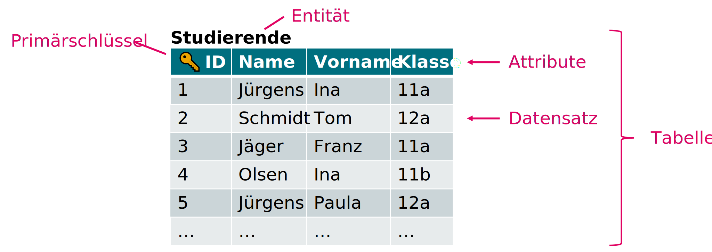

Datenbanken#
Eine Datenbank (DB) ist ein System zur Datenverwaltung, welches die primäre Aufgabe hat, grosse Datenmengen
effizient
widerspruchsfrei
dauerhaft
zu speichern und für die weitere Verarbeitung/Analyse bereitzustellen.
Lernziele#
Sie können erklären, was eine Datenbank ist und welches die Hauptanforderungen an eine solche sind.
Sie können die Begriffe Entität, Attribut, Datensatz und Pimärschlüssel auswendig erklären.
Sie können mind. zwei Vor- und Nachteile von relationalen Datenbanken aufzählen.
1. Motivation#
Eine Datenbank ist allgemein eine strukturierte Sammlung von Daten. Sie ermöglicht das Speichern, Verwalten und Abrufen von Informationen.
Jedes Unternehmen bzw. jede Organisation verwendet Datenbanken, um grosse Datenmengen auf organisierte Weise zu verwalten und die Daten entsprechend ihrer Verwendung zugänglich zu machen. Datenbanken ermöglichen es einem Unternehmen
fundierte, datenbasierte Geschäftsentscheidungen zu treffen
themenverwandte Informationen effizient zu speichern und abzurufen
Geschäftsdaten zu analysieren
wichtige Kunden- und Prozessdaten zu sammeln und speichern
den Zugriff auf Geschäftsdaten zu verwalten
Sie haben alle in der Vergangenheit bereits direkt oder indirekt mit Datenbanken zu tun gehabt. Stellen Sie sich für den Moment z. B. eine einfach Excel-Tabelle mit bestimmten Daten vor, welche in einer gewissen Struktur vorliegen. Wir werden uns schrittweise an die Thematik Datenbank herantasten und feststellen, dass eine Datenbank bzw. ein Datenbanksystem viel mehr ist als eine Tabelle mit strukturierten Daten.
2. Datenbanken#
2.1 Anforderungen an eine Datenbank#
…
Datenkonsistenz
jeder Datensatz muss eindeutig identifizierbar sein (konsistent lat. con = “zusammen” + sistere = “halten”) [vgl. Fingerabdruck]
Primärschlüssel werden einmalig vergeben und auch nach löschen des Datensatzes nicht neu vergeben
Redundanzfreiheit
Redundanz = überflüssige oder mehrfach vorkommende, gleiche Informationen innerhalb verschiedener Datensätze (lat. redundare = “überlaufen, im Überfluss vorhanden sein”)
Redundanzfreiheit = alle Daten werden nur ein einziges Mal erfasst und gespeichert
spart Speicherplatz und verhindert Probleme (Anomalien) bei späteren Änderungen
Sonstiges
Datensicherheit; um Datenverlust zu vermeiden, müssen Backups getätigt werden
Datenschutz
Multiuser-DB; Zugriffsmöglichkeit für mehrere Nutzer gleichzeitig
Reihenfolge der Datenerfassung ist unerheblich, die Daten organisieren und verwalten sich selbst
2.2 Datenbankmodelle#
Es existieren verschiedene Datenbankmodelle, welche nachfolgend aufgelistet sind. Diese bestimmen, wie die Daten strukturiert/angeordnet werden. Wir werden uns im Modul Datenengineering auf relationale Datenbanken fokussieren, welche die wichtigste Gruppe bilden.
- hierarchisch
- Folgen einer Rangfolge oder einer Parent/Child-Beziehung, um Daten zu strukturieren.
- netzwerkartig
- Daten werden in Netzen gespeichert, was als Verallgemeinerung des hierarchischen Datenbankmodells aufgefasst werden kann. Es sind nun auch bidirektionale Beziehungen (Child mit mehreren Parents etc.) möglich.
- relational
- Die Daten werden zeilenweise in Tabellen verwaltet. Es kann beliebige Beziehungen zwischen Daten geben. Sie werden durch Werte bestimmter Tabellenspalten festgelegt.
- objektorientiert
- Informationen werden objektartig abgespeichert. Objekte können Eigenschaften und Daten von anderen Objekten erben.
- dokumentenorientiert (NoSQL)
- Verwaltet eine Vielzahl von Formaten wie Dokumente, Diagramme, … und bietet eine grosse Flexibilität und Skalierbarkeit (keine Voraussetzung der Strukturgleichheit).
3. Relationale Datenbanken#
3.1 Definition#
Es
wichtigste Untergruppe der Datenbanken
besteht aus mindestens einer, meistens aus mehreren Tabellen (Relationen)
Verwendet ein Schema (Vorlage, Bauplan)
Eine Definition für eine relationale Datenbank könnte nun lauten:
3.2 Vor- & Nachteile#
Vorteile |
Nachteile |
|---|---|
Folgen einem strengen Schema. Das ermöglicht, die Daten vorhersehbar und kontrolliert abzuspeichern |
Das strenge Schema machen das Speichern unflexibel |
ACID-Konformität |
Nicht sonderlich gut skalierbar |
Struktur reduziert die Fehlerwarscheinlichkeit |
Datenmigration (Daten von einer Datenbank in eine andere überführen) ist aufgrund der vorgegebenen Struktur herausfordernd |
3.3 Begriffe#
Im Zusammenhang mit Datenbanken müssen wir einige wichtige Begriffe kennen. Dies meisten davon sind relativ intuitiv.
- Datenbank (DB)
- Systematische, strukturierte Ansammlung von Daten, die in einem sachlogischen Zusammenhang stehen.
- Datenbankmanagementsystem (DBMS)
- Verwaltung und Nutzung der in der DB gespeicherten Daten.
- Entität
- Bezeichnet eine Sammlung von Dingen (Objekten) mit gleichen Merkmalen. Beispiele sind Studierende, Bücher, Messwerte.
- Attribut
- Ein Merkmal eines Datensatze, z. B. der Name einer Person. Jedem Attribut wird ein bestimmter Datentyp zugewiesen.
- Datensatz
- Einzelne Einträge in einer Tabelle. Die einzelnen Einträge bilden einen Datensatz.
- Tabelle
- Tabelle mit Entität, Attribut und Datensätzen.
- Primärschlüssel
- Jede Tabelle braucht einen Schlüssel, welcher die Datensätze eindeutig identifiziert. Dieser kann aus einem oder einer Kombination von mehreren Attributen bestehen. (Der Primärschlüssel wird auch Identifikationsschlüssel genannt.)

Für den Datenbankentwurf werden wir später eine kompakte Darstellung kennenlernen, welche hier bereits kurz eingeführt werden soll. Die nachfolgende Abbildung enthält alle wesentlichen Informationen über die Tabelle (PK steht dabei für Primary Key also Primärschlüssel bzw. Identifikationsschlüssel).
Data Engineering | DAT_ENG | 2024